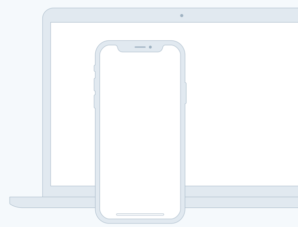

Tagline
Source helps creators do more of what they love
A device that enables collaboration will lessen the chance of work having to be completely redone.

-
Feature one
In such a test, the user performs realistic tasks by interacting with the paper prototype.
First link -
Feature two
Three techniques of paper prototyping used for usabiilty testing are comps, wireframes.
Second link
-
Feature three
Rapid prototyping involves a group of designers who each create a paper prototype.
Third link -
Feature four
Functionality is similarly unimportant, but in this case are closer to the final product.
Fourth link